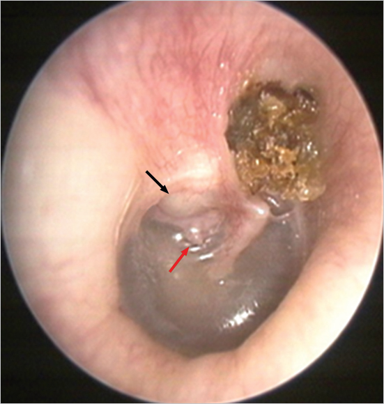
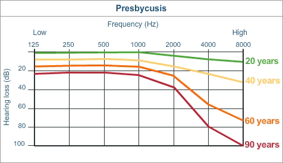

So we’ve already covered a number of hearing disorders
Today, we’re going to focus on causes of hearing loss, deafness, and weirdness in hearing!
Causes of acquired hearing loss
Presbycusis
Causes of congenital hearing loss
Tinnitus
Barotrauma
Skull fractures
Middle ear damage
This is the big one
We’ve talked about it a bunch
Protect your ears!
Cerumen Impaction
Foreign Objects
Otitis Externa
Otitis Media
Ossicular Dislocation
Eustachian tube dysfunction
A non-cancerous growth in the middle ear
Usually associated with repeated OM
Grows, eventually involving the ossicles, TM, and more
Diagnosable from otoscopy or MRI
Removed surgically

Overpressure of endolymph affecting hearing and balance
Causes are unclear
Often has strong vestibular and hearing effects
Medications or chemicals which affect (generally) the organ of corti
Quinine compounds, loop diuretics, aminoglycoside antibiotics (for some), and many more
Opioid painkiller (ab)use can causing hearing loss
Alcohol is vestibulotoxic, in the short term
Many diseases can affect hearing
Chicken Pox, Cytomegalovirus, Mumps, Meningitis, and lots more
These have various effects on the organ of corti
The exact mechanisms here are often frustratingly vague!
When your body attacks the structures needed for hearing, you lose hearing
Also known as ‘age-related hearing loss’
Also known as

We’re not 100% sure of the exact pathology
There appears to be a genetic component which influences the degree of it
Different people have different characteristics of loss
These fit into different ‘types’
Mechanical: Stiffening of the basilar membrane
Neural: Degeneration of the auditory nerves and spiral ganglion
Metabolic: Loss of bloodflow and atrophy of the stria vascularis
Sensory: Degradation of OHCs
These can be mixed together, and people can be unique
Presbycusis is likely caused by the accumulation of various auditory insults over years.
“No, I can go shooting without hearing protection, it’s fine the next morning”
“Going to that concert without protection was fine, I didn’t even notice anything!”
“Oh, luckily that medication didn’t affect me”
“Smoking doesn’t cause hearing loss, I hear things just fine”
Your cochlea remembers!

Particularly given that there’s no one cause
Patients are generally ‘treated’ with amplification or CIs
… but that’s all we can do
Around 50% of deafness in children is genetic in nature
GJB2-related Congenital Deafness is the most common
These are recessive mutations
People can carry the mutation without being Deaf
This is why many hearing people have Deaf children
Here, deafness occurs alongside other developmental abnormalities
Down Syndrome, Usher Syndrome, Treacher Collins Syndrome, and many more
The source of the hearing loss varies
Down Syndrome is usually conductive loss
Usher syndrome is hair cell related and often causes balance issues too
Treacher Collins is due to…
The pinna or ear canal are small, ill-formed or missing
Many different extents, with different effects
Always a conductive loss
Rubella, Influenza, Mumps are the big ones
Also Cytomegalovirus, toxoplasmosis, and herpes
The mother may be relatively unaffected, but deafness may still occur
Measles and Mumps causes hearing loss in children and adults
Rubella causes deafness in utero
The MMRV vaccine also covers Chicken Pox
There is no link between vaccines and autism, and the study this myth is based on was falsified
If you care about hearing, vaccinate your kids
The same compounds which can cause deafness in adults can cause congenital hearing loss
Methylmercury is more dangerous during development than to adult hearing!
“Exposure to methylmercury most commonly occurs when people eat kinds of fish and shellfish that have high levels of methylmercury in their tissues”
Hearing is very complex, and subtle changes during development can have non-subtle effects
… but those are some of the most common causes
“ringing”, “buzzing”, “static”, “hissing”, “roaring”, “grasshoppers”
Can be a single ‘pitch’ or broadband, at any pitch
Can be ‘quiet’ or ‘loud’
Can be in one ear or both
It’s caused by many different things
Generally associated with hearing loss and noise exposure
Auditory hallucination is a common symptom of psychiatric disorders
Tinnitus perceptions are very basic (‘ringing’ or ‘hissing’ or ‘noise’)
Auditory hallucinations are the perception of complex sounds which aren’t real
Tinnitus is usually not interpretable or confusable with sounds originating in the real world
People ‘know their tinnitus’
Except maybe in audiograms!
“Ringing in your ears” after head, acoustic, or pressure trauma
Some mildly ototoxic drugs cause tinnitus for the duration of use
Objective tinnitus is actual noise inside your head
Pulsatile bloodflow, whooshing from heart murmurs, etc
Somebody else can hear the noise with a stethoscope
Subjective tinnitus is the sensation of noise which is not objectively present
We suspect it’s more of a ‘brain’ thing than an ‘ear’ thing
There’s not a scientific consensus on the causes
The brain trying to ‘turn up sensitivity’ due to missing or damaged hair cells
Phantom hearing, along the lines of ‘phantom pain’ from a healed injury
Neural connection imbalances or failures
… and many more!
There is no ‘damage’ or ‘harm’ caused by tinnitus
Hearing is not further ‘reduced’ by it, and it has no balance effects
Many people live with it without troubles
It’s annoying as heck
Counseling and Therapy (Cognitive behavioral therapy) to reduce the psychoemotional impact
Masking the tinnitus (using music, background noise, or sound generators)
Acoustic Neural stimulus approaches
Feeding in a signal designed to compensate for the specific patient’s hearing loss profile
The literature is unclear about effectiveness here
… but not super understood
and not really ‘treatable’ at this time!
There are many causes of adult hearing loss
Age-related hearing loss is common, and steps you take today can reduce it
Congenital deafness is often genetic, but can have other causes
… and tinnitus is as annoying as it is poorly understood
Audiology, from an Audiologist!